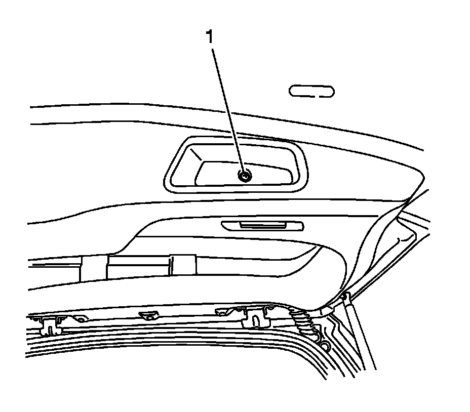
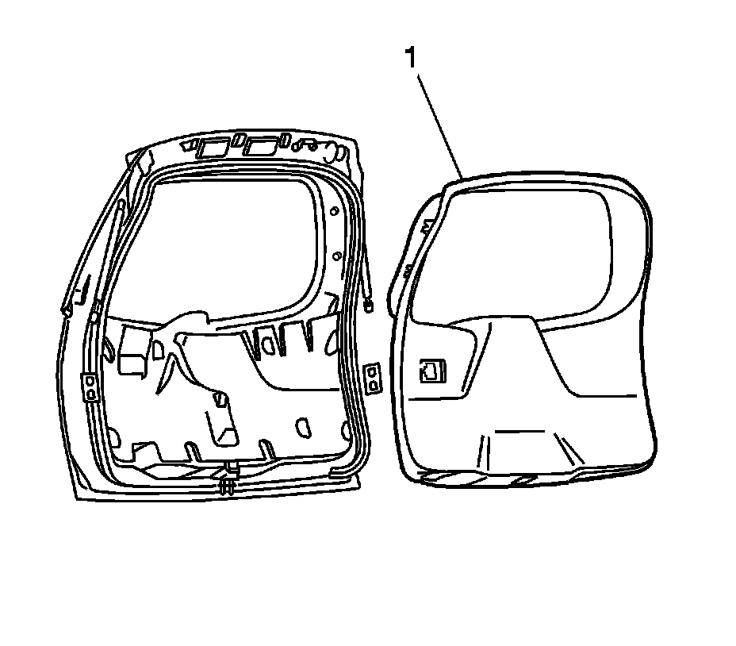

Liftgate Trim Panel Replacement (w/o TB5)
Liftgate Trim Panel Replacement (w/o TB5)
Removal Procedure

1. Remove the liftgate retaining screw (1).
2. Partially remove the trim panel near the rear courtesy lamp.
3. Disconnect the rear courtesy lamp electrical connector.

4. Remove the liftgate trim panel (1).
5. Inspect for broken or missing retainers.
Installation Procedure
1. Replace any broken or missing retainers.
Important: The plastic retainers around the window opening should remain in the liftgate.
2. Connect the rear courtesy lamp electrical connector.
3. Align the 2 outboard locators on the trim panel with the holes in the liftgate.
4. Apply pressure to attach the clips in the lower portion of the trim panel to the liftgate.
5. Align the outboard clips around the window opening with the slots in the trim panel. Press the panel (1) into position.
Notice: Refer to Fastener Notice (Fastener Notice) .
6. Install the liftgate screw (1).
Tighten the screw to 2 N.m (18 lb in).